With our complete lawn and landscape maintenance service, you can rest knowing all of your outdoor chores are handled attentively and respectfully. We always leave your property looking beautiful and tidy.
Every maintenance visit is thorough. We take the right approach for your specific grass type and current season — not a one-size-fits-all routine.
- Mowing at the correct height for your grass type and season
- Pruning shrubs and ornamental trees as needed
- Edging all driveways, pathways, patios, and bed lines
- Removing all organic debris after cutting and pruning
- Blowing off all hard surfaces — driveways, patios, carports
- Weed control in all defined beds
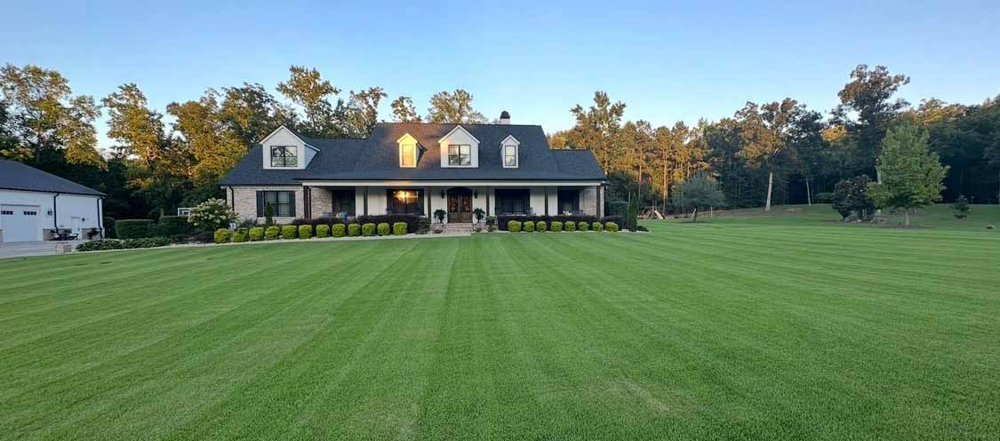
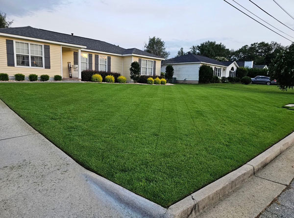
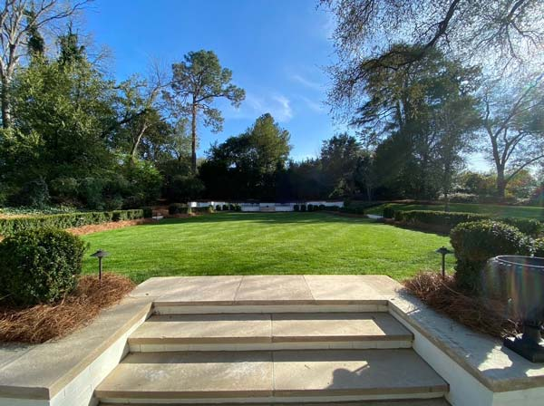
Signature Grounds wants to help make your dreams a reality. Whether you have a clear vision or are starting from scratch, we can assist with full landscape design and the complete installation of your outdoor space.
We have the tools, resources, and expertise for every stage — from initial grading and excavation to the final plantings and lighting accents.
- Landscape design consultation and planning
- Shrub and sod installation
- Outdoor kitchens and pergolas
- Decks and patio structures
- Irrigation system integration
- Outdoor lighting design
- Retaining walls and terracing
"If you can dream it, Signature Grounds can make it happen."
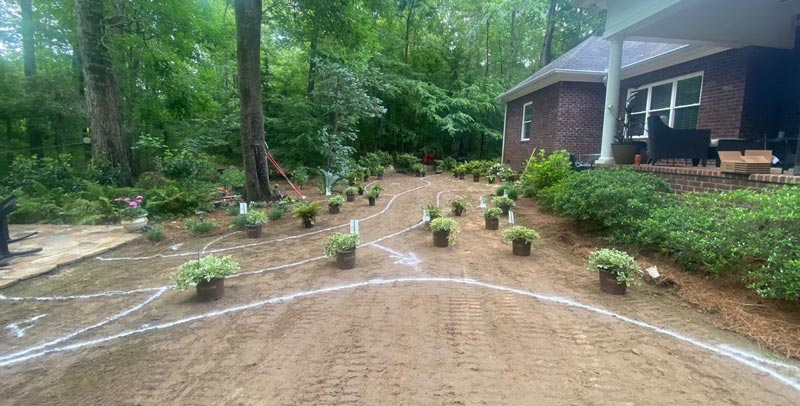
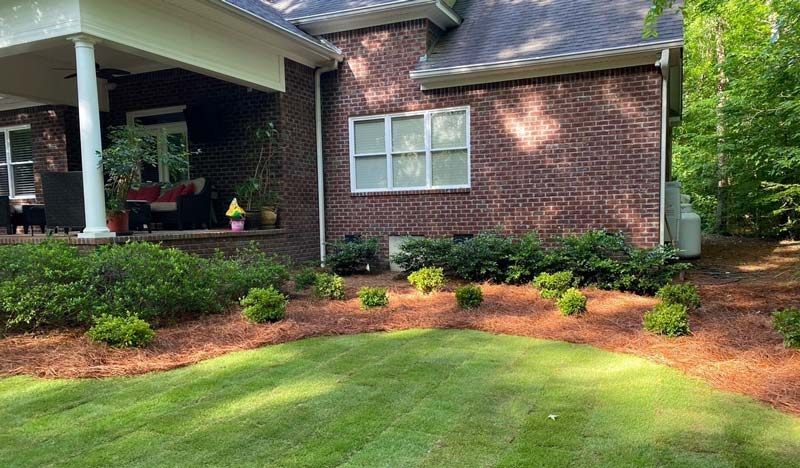
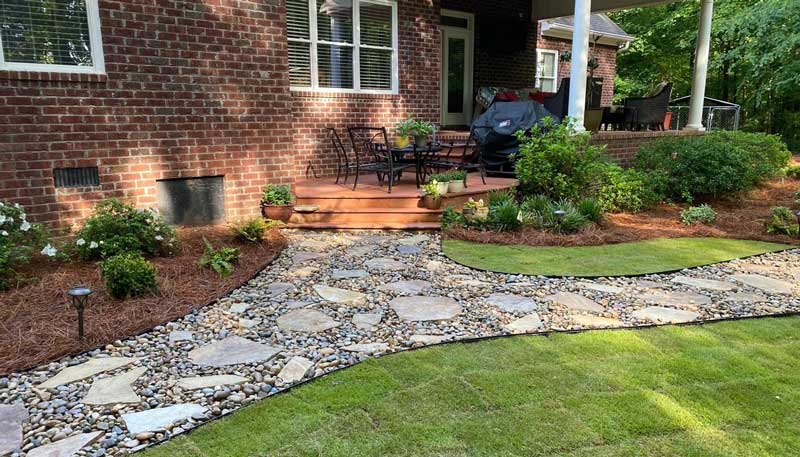
Is your sprinkler system in need of repair? Is your fence damaged from inaccurate sprinkler coverage? Signature Grounds uses the latest water delivery technology to irrigate your landscape efficiently — without wasting money or harming the environment through overspray and runoff.
The hidden costs of a poorly designed system:
- Paying for water that never reaches your lawn or landscaping
- Damage to fencing, siding, patios, and walkways from overspray
- Fertilizer and chemical runoff polluting local creeks and waterways
We design, install, and repair irrigation systems for properties of all sizes — from residential lawns to larger commercial landscapes. Call us and we'll put together the right system for your specific conditions.
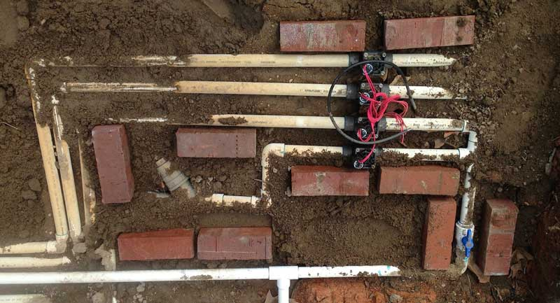
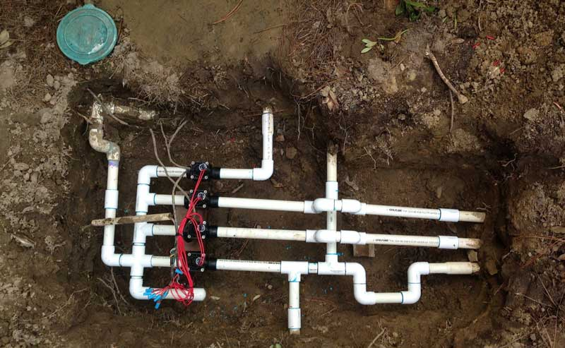
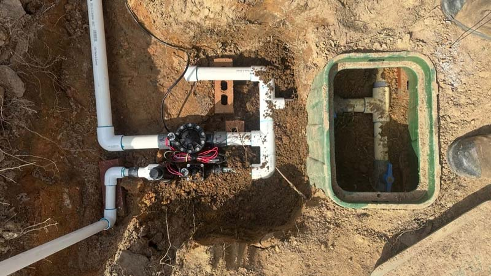
A well-designed drainage system is essential to protect your home's foundation and maintain healthy trees, shrubs, and turf. Poor drainage also attracts mosquitoes, which prefer standing water to lay their eggs.
Signature Grounds uses the latest technology to map your property's topography and engineer a drainage solution that solves the problem permanently. We handle everything from site assessment to full installation.
- French drains
- Curtain drains
- Trench drains
- Dry wells
- Yard inlets
- Catch basins with or without sump pumps
"Signature Grounds — our drains work."
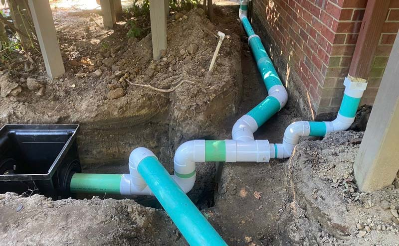
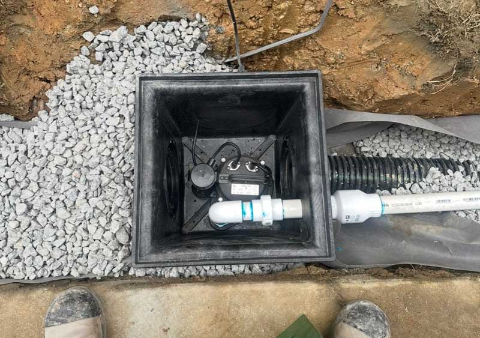
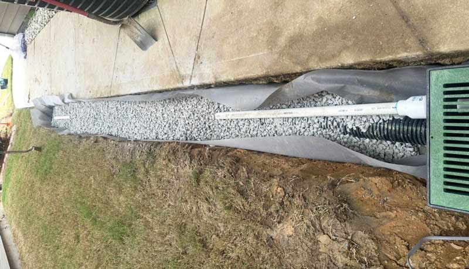
Landscape lighting is one of the most overlooked investments homeowners can make — and one of the most transformative. A well-designed lighting system:
- Casts your home in a warm, welcoming glow
- Enables safe movement around the property after dark
- Extends the time you can comfortably spend outdoors
- Highlights architectural features and landscaping you're proud of
Our outdoor lighting systems are professionally designed and installed to highlight your home beautifully, with all electrical components installed properly and to code. We're happy to offer ideas and guidance on smart, tasteful lighting techniques.
Our solid experience in designing and building retaining walls is your assurance that you'll have a wall that stays in place, season after season. We work with a range of materials to match your property's character and your budget.
- Natural stone
- Brick
- Large interlocking pavers
- Concrete
Retaining walls can also be a visually striking way to pull your whole landscape together. On sloped properties, introducing a series of terraces — with a stairway running through the middle — can create a luxurious and inviting outdoor environment that makes even small yards feel larger and more dynamic.
Whether you want to start a project off right or you need to resolve a specific drainage issue, adjusting the grade of your property can be a crucial step. The critical factor is using a company that has more than the right equipment — expertise is essential in ensuring a result that serves you for years.
We can help you assess your property grades, drainage needs, and plans for usage to make valuable recommendations and prevent future issues. When excavation is needed — beneath softscapes or hardscape — we get it done safely, precisely, and always with care for surrounding areas.
- Property grade assessment and recommendations
- Drainage-focused regrading
- Excavation for foundations, walls, and hardscape
- Land clearing and site preparation